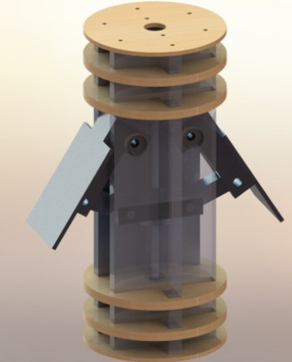
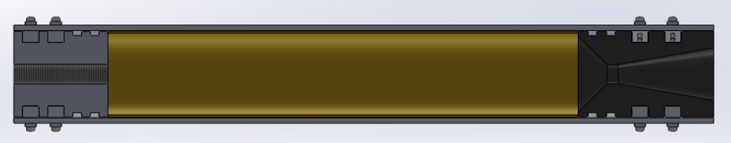
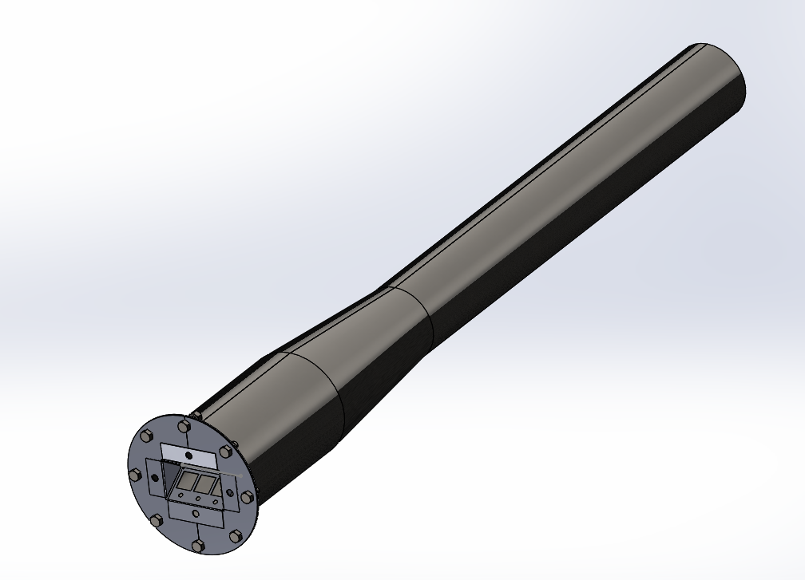
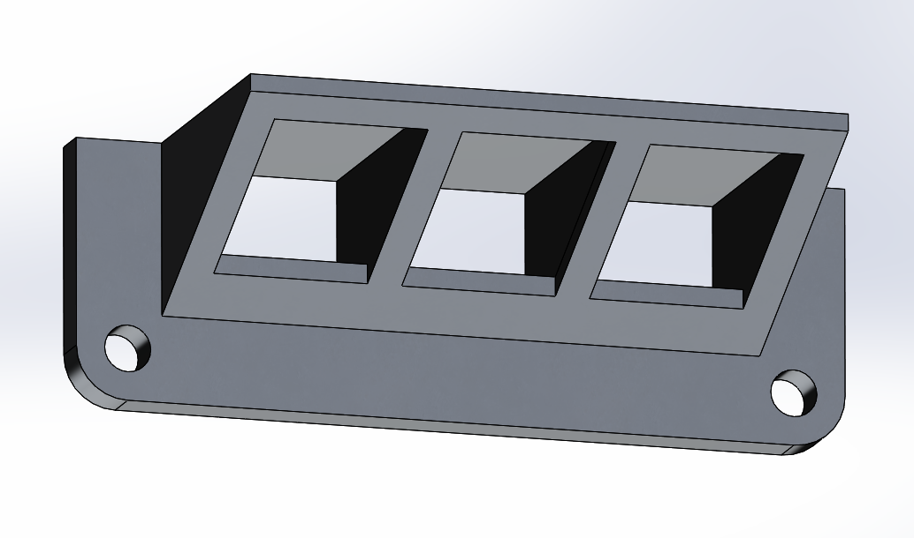
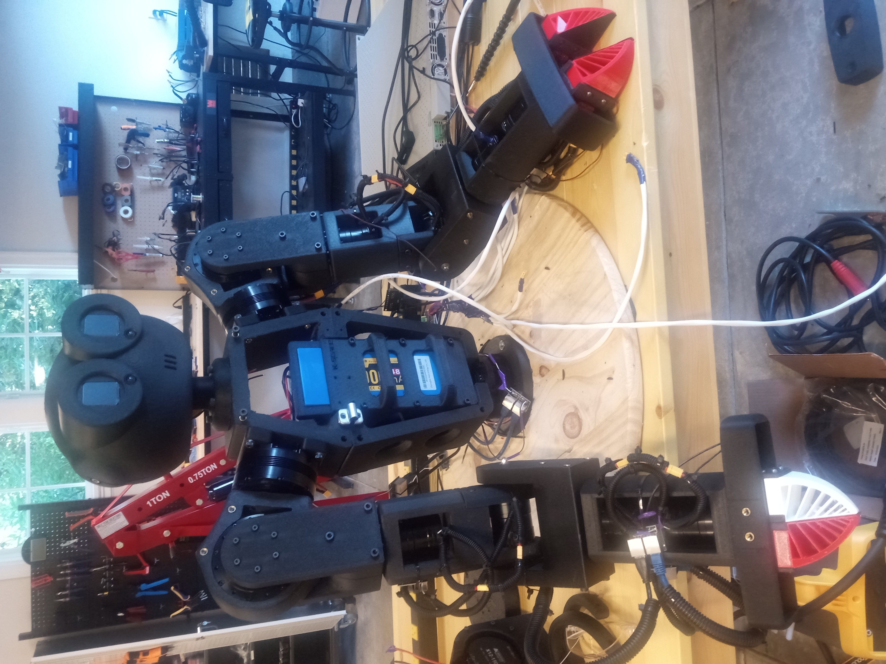
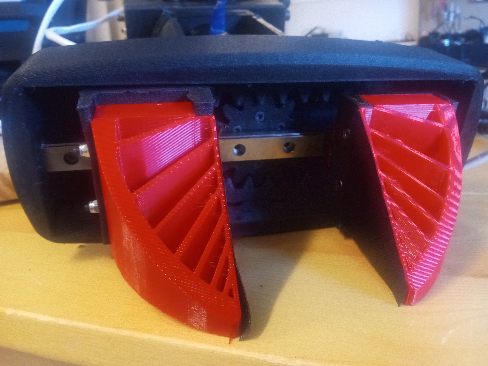
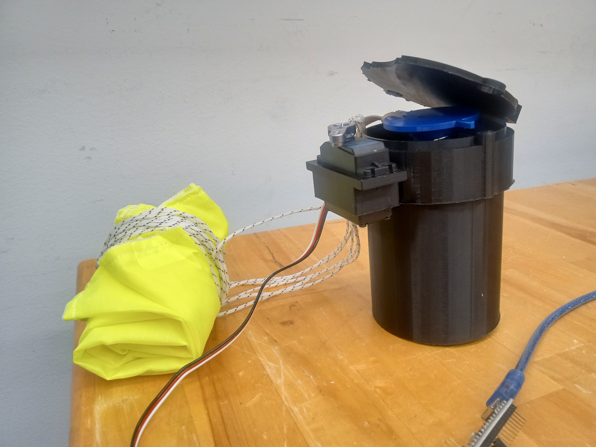

Welcome!
Kenji Sakaie - Sakaie.org
I am currently studying mechanical engineering at Olin College but I still feel that Cleveland is the center of civilization. I follow curiosity and a belief in an inspired and glorious future. Ultimately, I hope to work on aerospace, prefabricated construction, and advanced manufacturing technologies, because they are key to creating that future. I seek to understand the philosophy of why and what to build, the foundation of physics and materials science on which these rest, the process of craftsmanship necessary to create them, and the relentless work and practicality necessary to make them work.
This I believe:
The promised future is here
Listen to the cranky people who have actually done something
Heroes are always looking for something other than heroism
Build as much as you read
Sakaie Projects
My Attempts at Learning by Doing
Olin Rocketry
 I currently serve as structures lead on Olin Rocketry, a community of students passionate about aerospace
engineering. Our current focus is the construction of a series of research and development rockets
progressing in altitude toward a flight into space in 2027.
To meet this ambitious goal, we are developing a variety of technologies which require refined mechanical
engineering, and the close integration of mechanical, electrical, aerospace and chemical systems.
I currently serve as structures lead on Olin Rocketry, a community of students passionate about aerospace
engineering. Our current focus is the construction of a series of research and development rockets
progressing in altitude toward a flight into space in 2027.
To meet this ambitious goal, we are developing a variety of technologies which require refined mechanical
engineering, and the close integration of mechanical, electrical, aerospace and chemical systems.
Airbrakes
In my first year on Olin Rocketry, I designed a system of mechanical airbrakes, which enabled active control of a rocket's altitude. Although not directly related to our ultimate goal, this project provided useful experience in integrating mechanical and electrical systems in a package constrained by the form factor, payload capacity, and aerodynamic stresses of a rocket.
The structures team started by generating a variety of concepts and creating sketch models:

We then performed detailed design of the mechanical system, where I was able to apply my existing knowledge of CNC machining and composite manufacturing techniques to design and fabricate lightweight and robust components from aluminum and composites. The airbrakes will be driven by a stepper motor controlling a 1/4-20 lead screw, which drives a set of four-bar linkages, and in turn a pair of aluminum flaps, which fold into the fuselage.
Due to their role as a part of the rocket's structure, the airbrakes incorporate an I-beam style construction aluminum construction wrapped in wood and carbon fiber based composites. This resists both the thrust force and off axis forces. These calculations informed the development of the avionics team's flight control algorithm

A new experience I gained from this project was the application of analysis to inform a mechanical design which would survive large aerodynamic forces, and an electrical system capable of driving it. Through this process I learned to apply both hand calculations through free body diagrams, and finite element analysis and basic fluid dynamics simulations.
Propulsion
The core of any rocket is its motor: Olin Rocketry uses solid fueled motors. The first motor I worked failed due to communication errors which led to an overconstraining nozzle. I resolved to gain a more complete understanding of rocket propulsion in order to avert future failures. After studying the textbook Rocket Propulsion Elements, I am using physics principles to calculate the optimal nozzle and casing design to maximize vehicle altitude and motor reliability. After machining a motor for the first time, I saw ways in which nozzle retention could be done more effectively am using my extensive machining experience to develop a design which is easier to produce using manual machining.

Pulsejet
Sometimes, you just have to do something cool! I worked with two friends to design and build a valved pulsejet engine, fueled by propane. Using the inherent resonance of a metal tube to create repeated deflagrations, a pulsejet is a simple and inefficient but very high thrust engine. Ours used a set of reed valves made from spring steel and mounted in a precision machined valve block. This project gave me valuable experience in the process of engineering from scratch: researching past projects, distilling them to principles, and using those to calculate an optimal design based on a few parameters. In this case, the parameters were 60lbs of thrust, and minimal cost.

I used equations sourced from various studies to parametrically design, and then fabricated it using conversational CNC machining, manual machining, and sheet metal working. My initial design for a low effort petal style reed valve failed due to the material properties of the spring steel, which would not deflect sufficiently to achieve the engine's resonance.

As a result, I am milling a more complex, v-shaped reed valve design which should provide for better airflow and more reliable valve operation. 
K-Scale
In my work at K-Scale Labs, I designed and built humanoid robots using rapid prototyping. Stompy, our humanoid robot, is meant to be manufacturable by either hobbyists or mass manufacturers overseas. To achieve these goals, I developed versions using both 3D printing and sheet metal. In the first version I developed, I designed a simple gripper and developed a head which would have all of the functions of a household smart speaker, allowing Stompy to take instructions by voice, view its environment, and respond using audio or visual outputs.


I learned audio engineering principles (not unlike those used in the pulsejet) to produce and receive clear audio from low cost components despite vibration caused by motors.

In the second and third variations, I refined the design to incorporate the same capabilities in a smaller package. I created conduit channels for power and data wires to run within the moving limbs of the robot, and designed satisfying, user friendly connectors for the limbs and battery.


I incorporated design for manufacturing principles and learned basic industrial design to make a robot which would be reliable, aesthetically pleasing, and easy to build for people with no technical experience.

Along the way, I also worked on developing a mobile battery power system and custom battery pack. I also researched alternative future actuator designs using multiple PCB stators to achieve a user-friendly form factor. In doing so, I gained a knowledge of power electronics and motor design.
Machining
In Ohio, manufacturing is a core part of culture. I started machining in high school, which has given me an appreciation for the perspective of people who will have to build what I design.

Machining has taught me to intuitively understand the qualities of the materials I work with. I have learned attention to detail, the essence of craftsmanship, and care for my tools.
Drones

My first drone-related project was a drone-mountable parachute system which I built as part of a research project for the Olin Robolab and Draper Labs. I learned the basics of control and filtering algorithms, implementing a complementary filter using Arduino and an MPU6050 IMU in order to activate a spring-loaded parachute instantaneously, but only if the drone fell out of stable flight conditions.